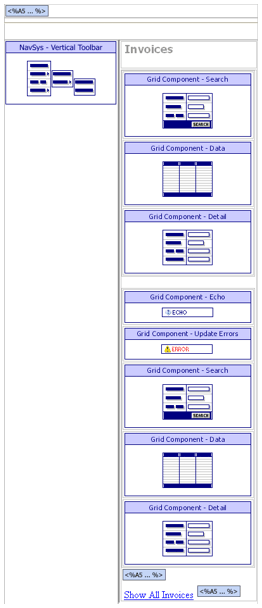
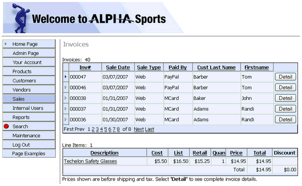

ASWINVOICES.A5W
Purpose
The application administrator users the ASWINVOICES.A5W page to select, view, and print the details of invoices.
Description
ASWINVOICES.A5W is an internal page. It shows an invoice header and related line items in 2 linked grids using a gridlinker. The parent component is GRD_INVHEAD. The child component is GRD_INVLINES. The GRD_INVLINES component uses calculated fields to calculate and display discounts and taxes by line. The total is displayed at the bottom of the page.
ASWINVOICES.A5W is used in sales history pages by filtering on the customer table's customer_id field and the invoice_header table's invoice_number field. When the page receives an override value in the page URL address, the parent gridlinker filter is changed in the override value OverrideSettings. If the page is filtered, a logical variable is used to show a link to "Show All Records".
ASWINVOICES.A5W contains the NAV_INT navigation and GRDL_INV gridlinker components.
Links
The Sales > Invoices entry in the NAV_INT navigation component displays the ASWINVOICES.A5W page. The ASWSALESHIST.A5W page can also open ASWINVOICES.A5W. From that page, the page is filtered on either on the customer table's customer_id field or the invoice_header table's invoice_number field. When the page receives an override value in the page URL address, the parent grid linker filter is changed in the override value OverrideSettings. If the page is filtered, a logical variable is used to show a link to "Show All Records".

ASWINVOICES.A5W in the WYSIWYG tab of the HTML Editor

ASWINVOICES.A5W in the Browser
Edits to the Page Source
When you look at ASWINVOICES.A5W with the Source tab of the HTML Editor, you will see a large amount of HTML and Xbasic code. The HTML Editor placed almost all of it there automatically, as we used the WYSIWYG tab to place the tables, text, graphics, and components on the page. There are a few interesting exceptions, where we changed the page code through the Source tab.
The inv and custid variables are optional parameters used to filter the records that the grids display. If either variable is not provided in the URL that page, this code creates it and sets it value to NULL.
|
if eval_valid("../Component/GRD_INVHEAD Grid Component.html") = .F. ' specific invoice inv = "" end if if eval_valid("custid") = .F. ' specific customer custid = "" end if |
These statements override properties of the navigation component. The location = "Sales" statement highlights the Sales tab of the menu.
|
... code to load the navigation component with tmpl_NAV_INT location = "Sales" 'highlight current option on navigation componentName = "NAV_INT" end with |
The following code calculates the filter expressions to apply to the two grid components. It uses placeholders for the inv and custid variables.
|
override1 = \<\<%code% DBF.filter = "Invoice_Number=\"inv\"" %code% override2 = \<\<%text% DBF.filter = "Customer_id=\"custid\"" %text% |
The filtered variable is used below to show a link if the page is filtered.
|
filtered = .F. ' |
This code merges the inv and custid variables into the filter expressions defined above. The new OverrideSettings properties change the records shown in the two grids. The filtered variable is set to TRUE if either or both grids are filtered.
|
if inv \<> "" ' invoice number filter has priority if both specified with tmpl_GridLinker Grid_Info1.OverrideSettings = stritran(override1, "inv", inv) End with filtered = .T. else if custid \<> "" with tmpl_GridLinker Grid_Info1.OverrideSettings = stritran(override2, "custid", custid) End with filtered = .T. end if |
The A5W_INCLUDE() statement is in the top row of the table. It loads TOPPAGE.A5W and displays a standard page header.
|
<body> <p> <table cellSpacing=0 cellPadding=0 border=0> <tr> \<td colspan="2"> <%a5 a5w_include("toppage.a5w") %> \</td> </tr> |
This short script test to see if the filtered variable is TRUE. If so, it displays the "Show All Invoices" link. This link reloads the page, but without the filter parameters attached to the URL.
|
\<%a5 if filtered = .T. %> <br> <a href=" <%a5 ?request.script_name %> ">Show All Invoices</a> <%a5 end if %> |
Page Security Information
Login Required
Groups Allowed > Accounting, Administrators, Clerical, Marketing
See Also